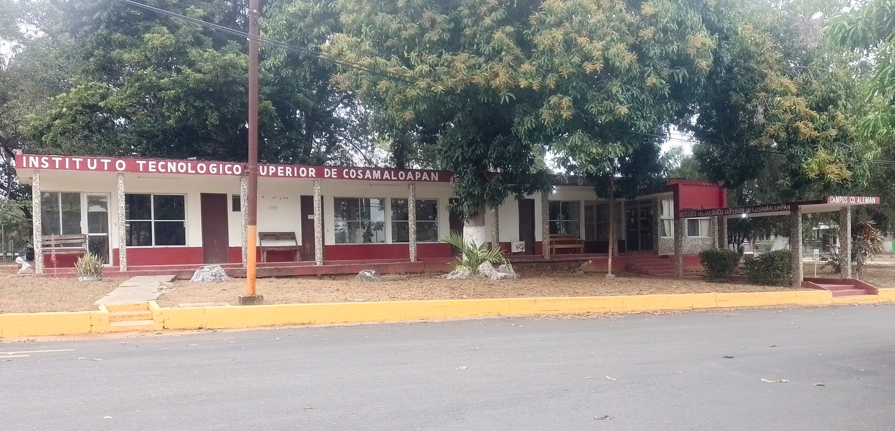

Empezamos con este lugar, pues es un gran referente de la localidad. Es una iglesia católica, en la cual se llevan a cabo varios eventos, como: bodas , XV años, comuniones, bautizos y misas de cuerpo presente.
Esta institución es nueva,pues antes se encontraba en otra área. Esta es una institución de educación Media Superior.
Esta es una institución educativa muy conocida y representativa de la localidad. En esta se imparte educación secundaria (nivel básico), es reconocida por su calidad en la enseñanza de los alumnos.
Esta es una institución educativa de nivel Media Superior y Superior, pues se puede estudiar el bachillerato y la universidad en el mismo Plantel.
Esta es una institución educativa de nivel Superior muy conocida por pertenecer a los Tecnológicos Nacionales de México. A esta cede acuden jóvenes de diversas localidades, como Gabino Barreda, Santa Cruz, Papaloapan, Novara, Tres Valles, etc.
